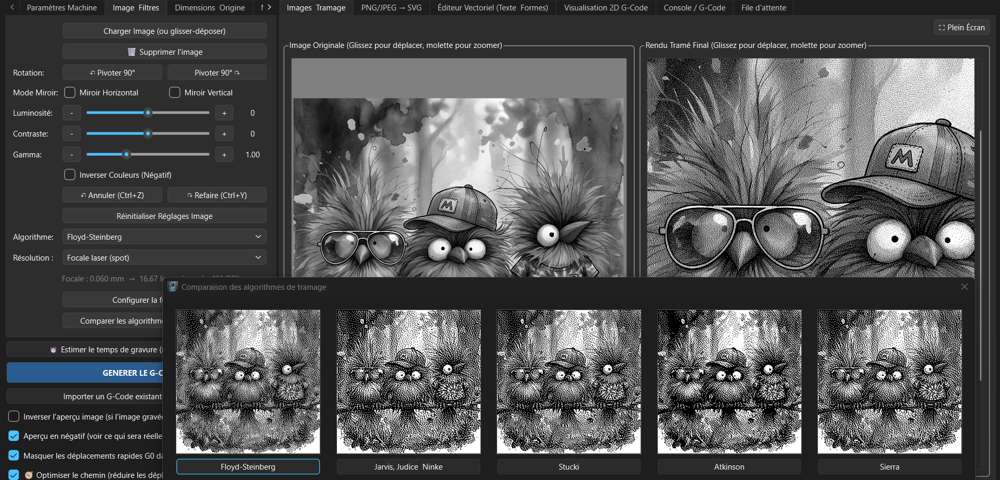

Gravure d'image et tramage
Compare les rendus avant de lancer la gravure, et règle le négatif d'un seul choix.
- Luminosité, contraste, gamma et plusieurs algorithmes de tramage.
- Résolution liée au spot laser : lignes/mm, DPI ou focale, avec un indicateur de qualité.
- Sélecteur de matière : fond noir ou fond clair, la case « Inverser Couleurs » suit.
- Aperçu avant/après pour choisir le meilleur rendu.